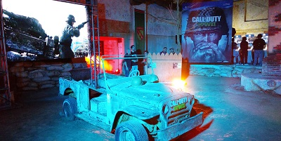
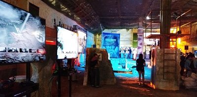
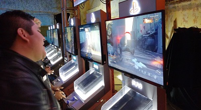
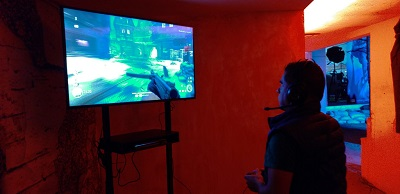
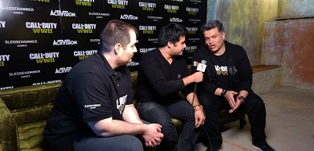

Lo vivido en el evento de lanzamiento de Call of Duty: WWII

Una linda mañana del 3 de noviembre, parte del equipo de Epic Network se lanzó a la Ciudad de México para atender el llamado que Activision nos hizo para asistir al evento de lanzamiento del nuevo Call of Duty WWII. Este tipo de escenarios en la industria no son para nada fuera de lo ordinario, el juego fue lanzado aquel día y para que se hiciera más contundente y la prensa de videojuegos pudiera hacer ruido del juego, se hacen estos eventos, sin embargo, no estamos hablando de cualquier juego, así como no estamos hablando de un lanzamiento cualquiera para Activision; estamos hablando del título más importante y ambicioso para la compañía, así como para su estudio Sledgehammer Games.
Partiendo de esa premisa ya se podrán imaginar cómo es que la compañía buscó crear una experiencia para los medios como para los fanáticos (los cuales fueron en la tarde, mientras que la prensa fue en la mañana). El escenario era un campo de tiro techado de Gotcha, por lo que se prestaba perfecto para que se hiciera una decoración pertinente a la franquicia, y sobretodo, para la temática tan peculiar que tiene ahora esta nueva entrega de la saga.

Trincheras, un coche de combate, barricadas, luces, y un soldado que andaba decorando el escenario, fueron algunos de los elementos que ayudaron a darle un toque a todo el lugar. Pero sobretodo, los que más conseguía robar nuestra atención fueron las estaciones con las pantallas y las consolas, en las que, claro, pudimos jugar los tres apartados más representativos con los que la saga, y en especial Call of Duty WWII, se presenta: su campaña, su multijugador competitivo, y su modo Zombies.
Si son perspicaces, se habrán dado cuenta que hice la mención que en esta entrega especialmente estos son sus 3 apartados más importantes. Y si son todavía más vivos, entenderán que quizá uno de esos apartados sobra. Así es, Call of Duty normalmente no se reconoce por su campaña, pero en el caso de WWII, Sledgehammer Games busca que gracias a la temática de la Segunda Guerra Mundial, se pueda ofrecer una historia que consiga tanto entretener a los jugadores, como cautivar a todos aquellos que busquen conocer una buena historia basada en un hecho histórico tan propicio para ello. Con eso en mente, un servidor probó un par de capítulos del modo historia, y fuera de dar la opinión que una reseña requiere, sólo me limitaré a decir que (ya me extenderé en la reseña) la historia no puede evitar tener todos esos clichés que acarrea un hecho histórico tan usado por la ficción como lo es la Segunda Guerra Mundial. Pero al menos, por lo jugado en ese momento, se podría decir que la campaña demuestra una forma de narrar los hechos mucho más cuidada que juegos anteriores.

También, había otro rincón del evento en el que pudimos probar el nuevo modo Zombies. Haciendo equipo con otros 3 compañeros de la prensa, nos pusieron a pasar oleada tras oleada de estas nuevas amenazas que se avalanchan por montones. Hay que decirlo, no hay mucha novedad en el frente en contraste con otros juegos, sobretodo por lo visto en los últimos Black Ops; e incluso creemos que los zombies, en esta ocasión, se comportaron mucho más benevolentes dejando que pudiéramos llegar hasta la oleada 17 sin mucho problema, pero aún así, eso no quita que lo hayamos disfrutado.
Y por último, pero no menos importante, tuvimos la oportunidad de jugar su modo multijugador competitivo. Primero había varias estaciones donde creaban partidas rápidas para experimentar cómo se sentía la interacción con los demás participantes del lugar. Como ya se imaginarán, tampoco podemos decir que se haya llegado a una innovación contundente con su multijugador, cambiar los Jetpack por los fusiles de asalto clásicos nos agradó bastante, y las nostalgia se podía respirar con cada Kill obtenido, pero nadie nos pudo quitar esa diversión con la que antes nos pasamos tantas horas frente a la pantalla.

Gran parte de ese genuina diversión la conseguimos ver de forma más contundente cuando parte de los patrocinadores del evento, como Hyperx y Playstation, decidieron crear una pequeña competencia entre los miembros de la prensa, para así, poder demostrar de los que estábamos hechos. Por su puesto, los tres miembros de Epic Network que asistimos tuvimos una participación bastante aceptable, pero para presumir, nuestro querido Productor General, Carlos Burrola, consiguió llegar a la final. A pesar de un esfuerzo impresionante, se tuvo que conformar con el segundo lugar.
Por su puesto, al ser un evento tan importante, varias figuras importantes de la producción del juego asistieron, por lo que nosotros no dudamos en hacerles una pequeña entrevista. Ahí fue donde nuestro compañero Guillermo H. Mata platicó, tanto con el diseñador principal del modo zombies, como con el jefe de Marketing de Activision en Latinoamérica. En la entrevista nos platicaron un poco del reto que fue para la compañía dar este cambio de rumbo y parte de algunos apuntes del diseño del juego. Dicha entrevista la podrán conocer muy pronto.

Al final del día nos fuimos satisfechos, esto porque en el evento se mostró cómo es que Activision y Sledgehammer Games están entregándonos un juego que busca ser no sólo un título ambicioso para la saga, sino también, una punta de lanza para una nueva era en la franquicia. Muy pronto publicaremos nuestra reseña, pero por lo mostrado en este evento de lanzamiento, se ve que Call of Duty WWII es de considerarse.